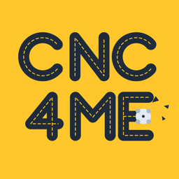

CNC4ME Privacy Policy
In effect from November 10, 2026.
In short: CNC4ME doesn't collect any data. There is no account to make, no advertising, no analytics and no tracking. What you put in the app stays on your device.
What stays on your device
The drawings you open, the parts the Reader reads from them, the programs the app writes or you bring in, your process plans, your tool list and your settings are kept in the app's own storage on your iPhone or iPad. CNC4ME doesn't send them anywhere. Deleting the app deletes them.
What leaves your device
Only what you send yourself: a program or plan you share through the share sheet, save to Files, AirDrop or copy goes where you send it, and nowhere else. CNC4ME has no server of its own and sends nothing to its developer or to anyone else.
Crash reports
If you have chosen in your device's settings to share analytics with app developers, Apple may send the developer anonymous crash reports and usage figures for CNC4ME. Apple collects these, not the app; you can turn this off under Settings, Privacy & Security, Analytics & Improvements.
Children
CNC4ME is not made for children under 13 and collects no information from anyone, children included.
Changes
If a later version of CNC4ME handles data differently, this page will say so, with the date it changed, before that version is released.
Contact
Questions about this policy: open an issue on GitHub.